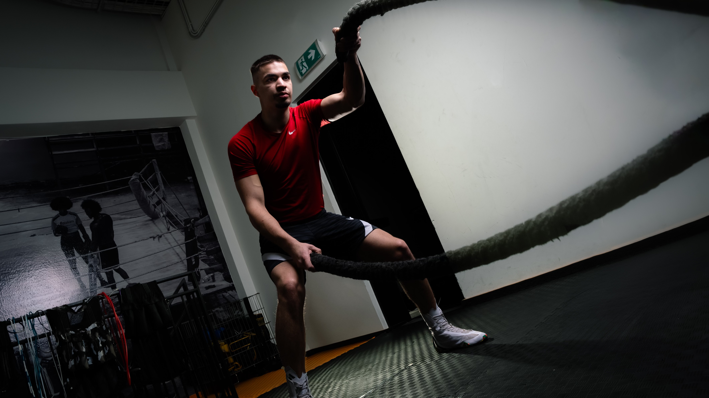
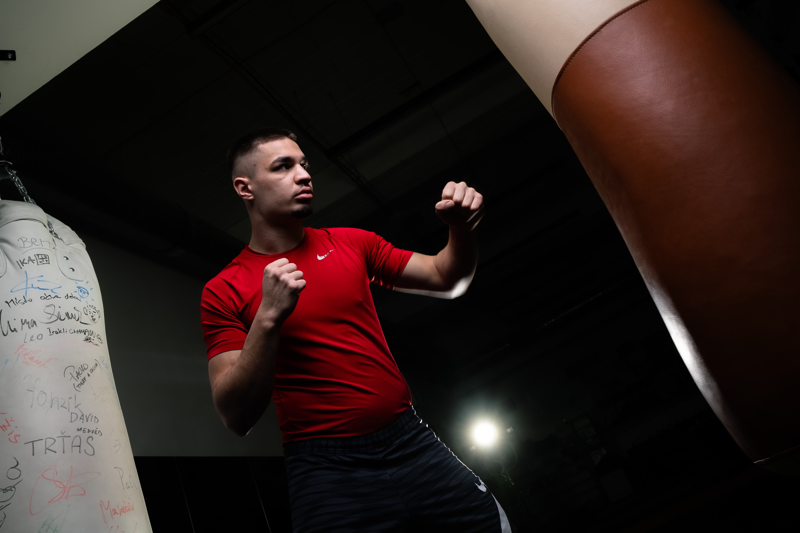
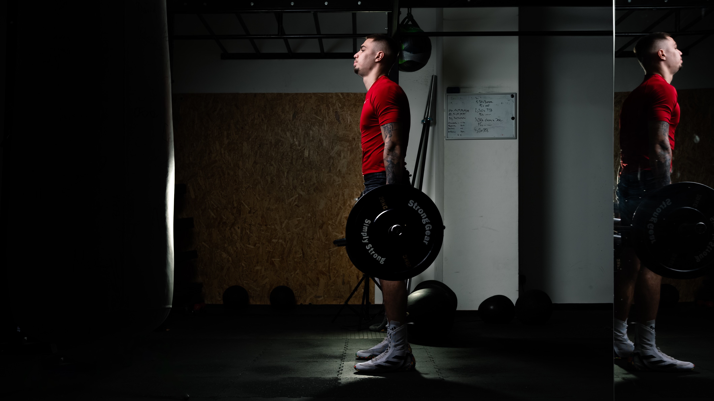

Jmenuji se Miloš Beránek, ale všichni mi říkají "Banán."
K boxu mě přivedl táta, který mě dodnes trénuje.
Box je pro mě sport, který miluji a zároveň nesnáším –
Sám pochopíš, o čem mluvím, až přijdeš na trénink.
S boxem jsem začal ve 12 letech. Za deset let jsem stihl 160 amatérských a 16 profesionálních zápasů.
Šestkrát jsem vyhrál mistrovství České republiky, dvakrát jsem dokázal vyhrát olympijské naděje,
a aktuálně jsem českou profesionální jednička ve váze do 69,8 kg (super welter).
Vyhrál jsem i spoustu mezinárodních turnajů a zúčastnil se mistrovství světa.
Služby

Trénink techniky
Tento trénink se zaměřuje na osvojení a zdokonalení základů boxerské techniky.
Hlavním cílem je zlepšit koordinaci pohybu, s důrazem na správné přenášení váhy při úderech, udržení rovnováhy a plynulost pohybu.
Na závěr hodiny je zařazeno 15 minut kardia, které doplní trénink a zlepší fyzickou kondici.

Vyvážený trénink
Vyvážený box kombinuje technický trénink s kondiční přípravou.
Prvních 30 minut je věnováno zdokonalování techniky, kde se zaměřujeme na přesnost a plynulost pohybu.
Druhá polovina tréninku pak zahrnuje 30 minut kardia a kondičních cvičení,
které podporují vytrvalost a zlepšují fyzickou zdatnost.

Trénink pro závodníky
Tento trénink je určen pro ty, kteří mají ambice zápasit nebo se již závodnímu boxu věnují.
Tréninky jsou vedeny s vysokou intenzitou a zaměřeny na pokročilé techniky.
Součástí je i příprava na reálné zápasové situace, rozvoj rychlosti, síly a odolnosti,
které jsou v ringu klíčové.
.png)